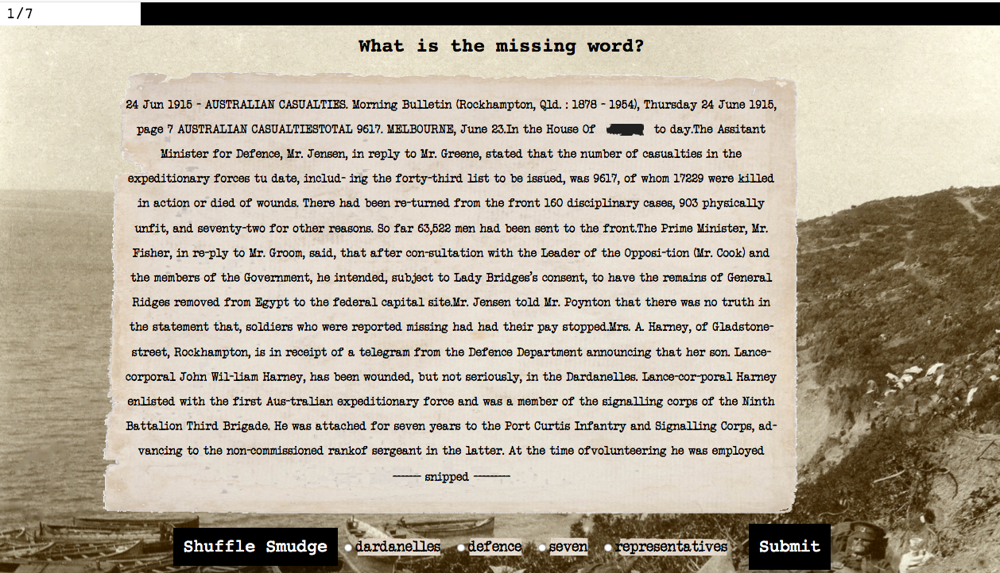
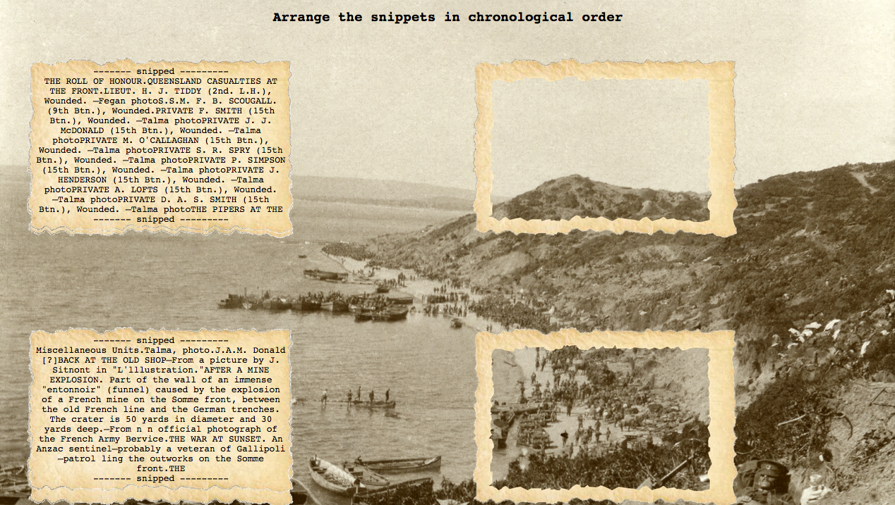

To add meaning to our website, we decided to focus on only one event, and having the articles that we use be in chronologically ordered reports of that event — the Gallipoli Campaign. Cos why not? It’s ANZAC 100 this year, so it’s a good matching theme.
So the team retrieved from the API about a hundred of articles that came from the keyword “Gallipoli” (using the same method from Hack 1) and we read through them all to select out the relevant articles of good quality. At the end we came up with a selection of only six articles, each representing a certain stage of the campaign.
$trove_keywords = array(
"Forty-third Expeditionary Force number",
"Our latest success",
"From Gallipoli. Caption: Central News, photo. Caption: Returning from the trenches through a deep gully",
"Captain Graham Butler, D.S.O., a Brisbane doctor, who has been awarded the Distinguished Service Order for bravery at the Dardanelles",
"Anzac sentinel sunset";
"The residential club for returned soldiers and sailors"
);
That itself wasn’t good enough; we needed to filter the options for the users as well. So yes, we hardcoded them after reading through the articles carefully to find quality words that invoke the most thinking.
//a list of good word options to smudge out, according to the same index in
//trove_keywords
$smudge_words = array(
array("Representatives", "Defence", "17229", "wounds", "front", "Egypt",
"Dardanelles", "seven"),
array("Narrows", "Asiatic", "ROCKHAMPTON", "procession", "Chanak", "Photo"),
array("Brevities", "Representative", "Metropolitan", "promotion", "instruction", "Lieutenant", "Tuckerman","Sergant"),
array("BUTLER", "SCOTTISH", "BUNDABERG", "doctor", "bravery", "Dardanelles", "fighting",
"wounded", "EGYPT"),
array("lllustration", "Miscellaneous", "official", "trenches", "funnel", "entonnoir", "veteran", "sentinel", "captured"),
array("letter", "rules", "secretary", "residential", "committee", "necessary", "knowledge")
);
Now that yielded a satisfying set of options! I also added a progress bar so that the user knows that they are making progress and it’s not endless. I learned first hand to make meaningful use of any data, manual reviews and tweaking of the output to the user is an important step, as data itself has little meaning without careful interpretation.

What’s the seventh question you ask? Isn’t there only 6? well, that’s the BOSS level which you have to arrange everything you read in chronological order. It was done in a rush and is confirmed almost impossible to complete. Of course, you can still try here.
